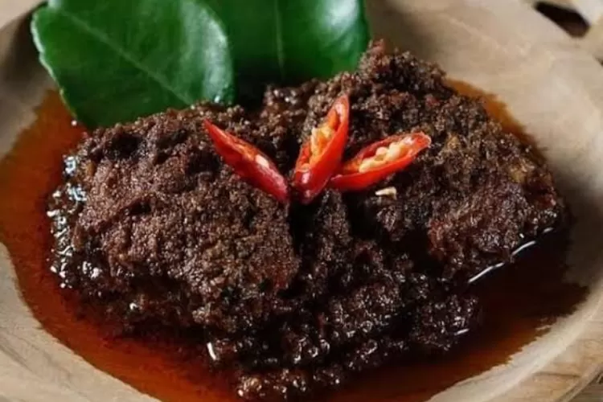

Resep Rendang Padang Asli

Rendang is a rich and flavorful Indonesian dish originating from the Minangkabau region in West Sumatra (Padang).
It's a slow-cooked dry curry deeply spiced with complex flavors.
Here's an original recipe for you to try.
Ingredients
- Beef: 1 kg, cut into cubes (traditionally, beef is used, but you can also use chicken or mutton)
- Coconut Milk: 800 ml, from 2 coconuts (use canned if fresh is not available)
- Lemongrass: 2 stalks, bruised
- Kaffir Lime Leaves: 8-10
- Turmeric Leaf: 1 (optional, for aroma)
- Tamarind Juice: 2 tbsp
- Galangal: 4 cm piece
- Salt: To taste
Spice Paste (blend the following):
- Shallots: 10
- Garlic: 6 cloves
- Red Chillies: 15 (adjust to your spice preference)
- Ginger: 5 cm piece
- Candlenuts: 5 (substitute with macadamia nuts if unavailable)
- Coriander Seeds: 1 tbsp
- Cumin Seeds: 1 tsp
Instructions
- Prepare the Spice Paste:
Blend the shallots, garlic, red chillies, ginger, candlenuts, coriander seeds, and cumin seeds in a food processor to form a smooth paste.
- Cook the Spice Paste:
In a large pot, cook the spice paste over medium heat until it becomes fragrant and its color deepens, about 5 minutes.
- Add the Beef:
Add the beef cubes to the pot and cook until they change color and are well-coated with the spice paste.
- Add Aromatics:
Add the bruised lemongrass, kaffir lime leaves, turmeric leaf (if using), and galangal to the pot. Stir to combine.
- Pour in Coconut Milk:
Add the coconut milk and tamarind juice to the pot. Stir well.
- Slow Cook:
Bring the mixture to a simmer and then reduce the heat to low. Allow the rendang to cook slowly, uncovered, for about 3 to 4 hours. Stir occasionally to prevent sticking.
The rendang is done when the meat is tender and the sauce has reduced to a thick, rich, dark brown paste.
- Season: Season with salt to taste towards the end of cooking.
- Serve: Serve the rendang with steamed rice, preferably jasmine rice.
Tips
- Patience is Key: Rendang benefits from slow cooking, which allows the flavors to develop and the meat to become tender.
- Stirring: Regular stirring is important, especially towards the end, to prevent burning as the sauce thickens.
- Coconut Milk Quality: The quality of the coconut milk significantly affects the taste.
Fresh coconut milk is ideal, but good quality canned milk can also work.
This recipe will give you a taste of authentic Padang-style rendang, rich in flavors and with a delightful complexity.
Enjoy your cooking!